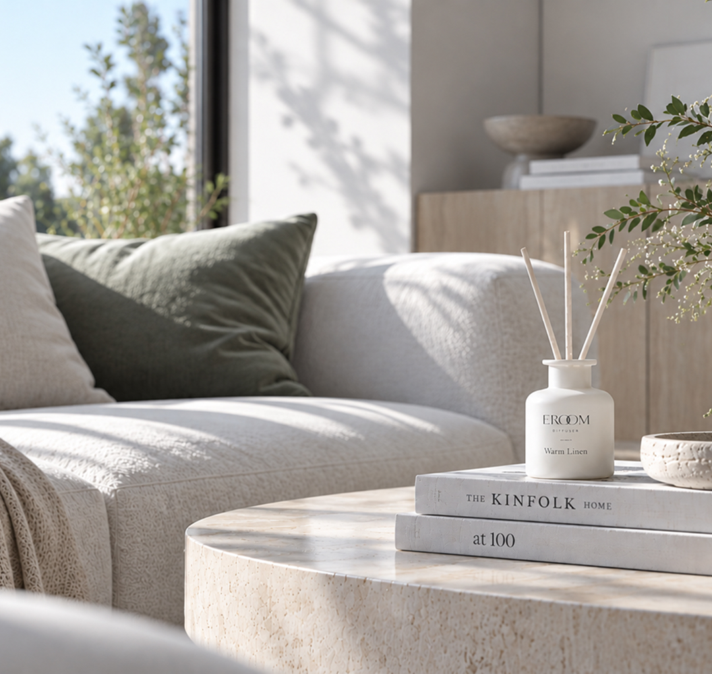
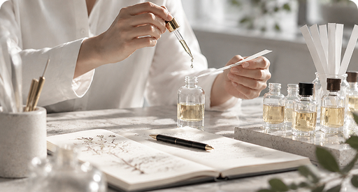
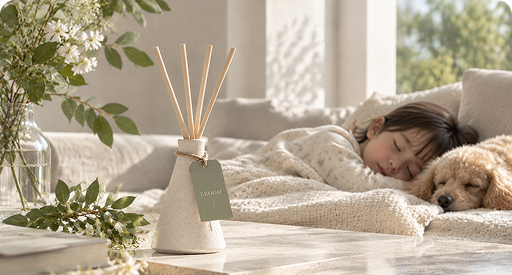
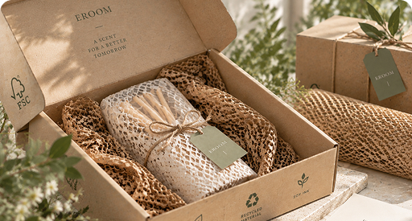

SCENT FOR YOUR SPACE
공간에 머무는,
나만의 향
좋아하는 향으로 채우는 일상.
당신의 공간에 어울리는 향을 만나보세요.
SCENT FOR YOUR SPACE
좋아하는 향으로 채우는 일상.
당신의 공간에 어울리는 향을 만나보세요.
향이 머무는 곳,
공간이 이루어집니다.
익숙한 공간도 어떤 향을 더하느냐에 따라
조금은 다른 분위기가 됩니다.
EROOM은 공간과 자연스럽게 어우러지며
오래 머물고 싶은 향을 만듭니다.

"당신의 공간에 스며드는 향기이기에, 작은 요소 하나도 타협하지 않습니다."

전문 조향사의 섬세한 조향
수천 번의 조향 테스트를 거쳐 완성된
이룸만의 독창적인 레이어링입니다.
감각적인 조향 기술로 공간 전체에
은은하고 입체적으로 퍼지는
프리미엄 향을 선사합니다.

안심할 수 있는 순수한 성분
매일 머무는 유해 성분을 배제하고
식물 유래 곡물 베이스 에탄올과
엄선된 안전 성분만을 담았습니다.
어린아이와 반려동물이 있는 공간에서도
매일 안심하고 사용하세요.

지속 가능한 내일을 위한 선택
지구와 일상의 상생을 위해
친환경 FSC 인증 지류와
재활용 가능한 용기를 사용합니다.
공간을 아름답게 채우는 일을 넘어
환경에 미치는 영향까지 깊이 고민합니다.